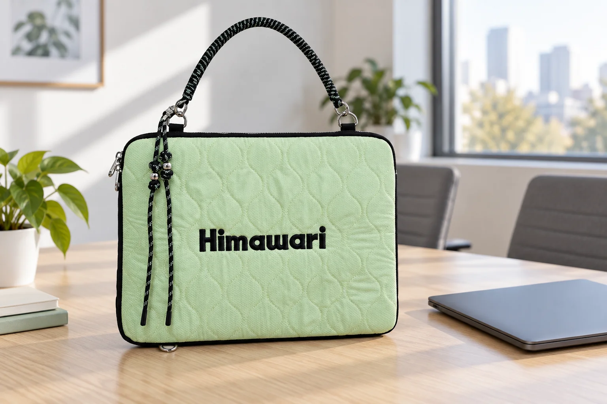
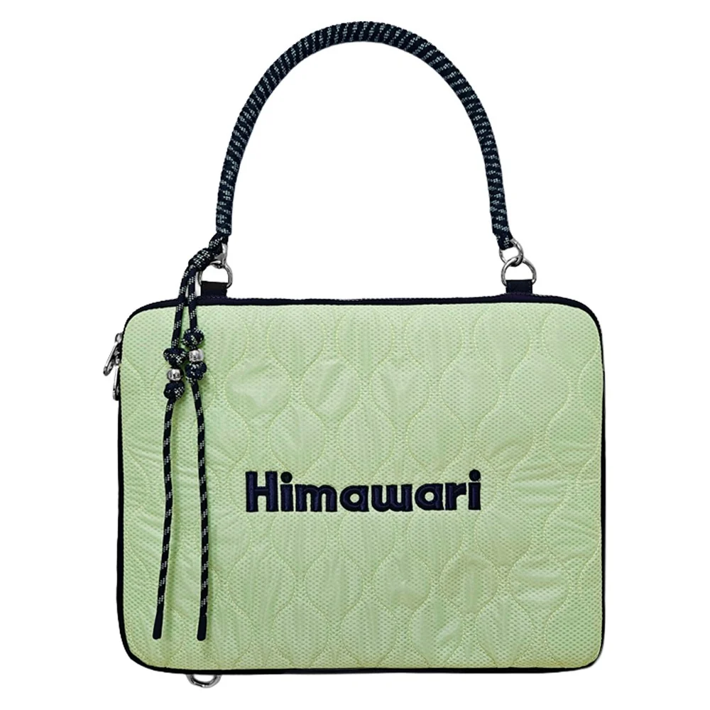

파우치 손잡이를 다시 연결한 뒤 볼 두 고리

파우치를 다른 가방 안에 넣을 때 손잡이를 따로 두었다가 짧은 이동에서 다시 연결해 쓸 수 있습니다. 손잡이를 걸었다는 기억만으로 들기 전에 양쪽을 가까이 살펴볼 필요가 있습니다. 파우치는 책상 위에 받친 상태로 두고 연결부를 정리하면 한쪽만으로 내용물을 들어 올린 채 다른 고리를 맞추는 상황을 피할 수 있습니다. 회의실 사이의 짧은 이동에서도 이 준비는 같은 자리에서 마칠 수 있습니다.
책상에 내려놓고 각각 연결한다
파우치를 안정된 면에 놓고 손잡이 양 끝을 원래 연결 위치에 맞춥니다. 한쪽만 걸린 상태로 들어서 다른 쪽을 연결하지 않습니다. 양쪽 부품이 제자리에 놓였는지 각각 확인하고, 손잡이 끈이 연결부의 여닫는 부분 사이에 들어가 있지 않은지 봅니다. 파우치가 책상 모서리에 걸친 상태라면 먼저 받칠 자리를 바꿉니다. 손에 든 기기를 잠시 내려놓을 수 있는 공간을 확보한 뒤 연결합니다.
연결부가 닫힌 것처럼 보여도 가까이에서 여닫는 부분을 살펴봅니다. 고리 바깥에 부품이 걸쳐 있는지, 작은 연결부가 비틀렸는지 확인합니다. 연결이 불분명할 때에는 들어 올려 시험하는 대신 책상 위에서 상태를 다시 봅니다. 잘 닫히지 않거나 변형이 보이면 힘으로 눌러 맞추지 않고 제품 안내와 문의로 확인합니다. 실제 내용물을 들기 전에 판단할 수 있는 범위를 먼저 살피는 것입니다.
끈이 한 바퀴 꼬여 있다면 양쪽 고리의 위치를 보고 정리합니다. 손잡이와 지퍼 장식이 엉켰을 때에도 어디에서 겹쳤는지 확인한 뒤 각각 제자리로 둡니다. 긴 장식을 편하게 잡을 수 있다고 손잡이처럼 사용하지 않고 어떤 부분을 들도록 만든 제품인지 안내를 따릅니다. 평소와 다른 길이나 위치로 바꾸고 싶다면 원래 구성에서 허용하는 방식인지 먼저 확인합니다.
원본에서 보이는 연결 고리
Himawari No.2513 민트 원본 사진에는 끈 형태의 손잡이가 양쪽의 작은 금속 연결부와 고리로 이어져 있습니다. 손잡이의 길쭉한 끈과 왼쪽에 내려오는 지퍼 장식도 구별해 볼 수 있습니다. 실제 사용에서는 손잡이가 연결되는 원래 고리를 확인하고 제품 안내에 맞춰 다룹니다. 사진에서 보이는 다른 작은 고리에 임의로 연결 위치를 옮기지 않습니다.

외관을 보는 것으로 연결부의 허용 하중이나 특정 노트북의 적합 크기를 판단하지 않습니다. 이 파우치의 카탈로그 외부 크기 36.5 × 28 × 2cm는 제품의 바깥 치수입니다. 기기와 함께 사용할 계획이면 실제 넣는 공간과 여밈을 확인하고 제품 사용 안내를 봅니다. 손잡이를 다시 연결하는 확인도 맞는 내용물과 정상적인 사용 조건 안에서 진행합니다.
지퍼를 닫는 일과 손잡이를 보는 일
내용물을 준비한 뒤에는 파우치의 여밈 상태를 봅니다. 지퍼가 닫혔다는 확인이 손잡이 연결의 확인을 대신하지 않도록 두 순서를 각각 남깁니다. 기기 위에 마우스나 충전기를 더 얹어 넣었다면 지퍼가 자연스럽게 닫히는지 살펴봅니다. 필요한 소품을 모두 한 파우치에 넣으려 하기보다 기기용 파우치와 부속품 묶음을 나누는 방법도 선택할 수 있습니다. 넣는 물건이 바뀌면 이동 준비도 다시 봅니다.
짧은 회의 이동의 예로 기기는 파우치에, 연결용 소품은 별도 묶음에 둘 계획을 세울 수 있습니다. 이는 특정 기기의 수납을 확인한 결과가 아니라 물건의 사용 순서를 나누는 예입니다. 실제로 어떤 구성으로 이동할지 정한 뒤에는 양쪽 연결부와 여밈을 같은 자리에서 확인합니다. 휴대전화나 종이 자료를 동시에 손에 들 예정이라면 파우치를 정리할 공간과 물건을 내려놓을 위치도 먼저 고릅니다.
제품 안내에 맞춰 이동을 시작할 때에는 손잡이가 정상 연결된 상태인지 마지막으로 봅니다. 연결부 상태가 확실하지 않다면 내용물을 안전한 위치에 두고 확인을 이어갑니다. 손잡이를 잡는 순간에 문제를 발견했다면 더 멀리 이동하며 살피지 않고 먼저 파우치를 받칩니다. 확인 순서를 책상 위에서 마칠 수 있도록 정하면 사람이 많은 통로나 좁은 출입구에서 부품을 다시 연결할 상황도 줄어듭니다.
도착한 자리에서 분리한 부품을 둘 곳
파우치를 내려놓을 때에는 안정된 면에 놓인 뒤 손잡이를 놓습니다. 지퍼 장식과 연결 고리가 책상이나 의자 부품에 걸려 있지 않은지 봅니다. 다시 다른 가방 안에 넣기 위해 손잡이를 분리한다면 그 부품을 노트북 위에 던져두지 않고 정한 자리로 옮깁니다. 분리한 손잡이가 전체 구성과 함께 남아 있어야 다음 이동에서 양 끝의 연결부부터 다시 확인할 수 있습니다.
여러 파우치를 함께 사용하는 경우에는 어느 손잡이가 어느 제품의 것인지 구별합니다. 모양이 비슷해도 임의로 바꿔 사용하는 구성으로 정하지 않고 각 제품 안내를 확인합니다. 분리한 부품의 자리를 정할 때에는 케이블이나 지퍼 장식과 섞이지 않는 방법을 고릅니다. 손잡이를 자주 분리하지 않는다면 분리 동작을 늘릴 이유도 없습니다. 실제로 필요한 사용 방식에 따라 준비 순서를 유지하면 됩니다.
연결부의 상태를 문의할 일이 생겼다면 파우치를 내려놓은 상태에서 어느 쪽에 어떤 변화가 보이는지 남길 수 있습니다. 외관 사진과 사용하는 모델 정보를 함께 준비하면 설명할 부분을 찾기 쉽습니다. 임의로 부품을 바꾸거나 하중을 시험하기 전에 현재 상태를 확인합니다. 정상적인 구성으로 다시 사용할 때에는 책상 위에서 양쪽 고리와 끈을 각각 살피고 여밈을 마친 뒤 이동합니다.